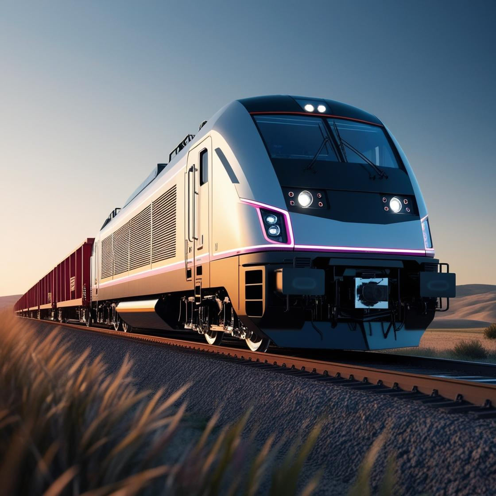

Всички влакове


Narrow gauge 700
Туристическата теснолинейка предлага живописно пътуване през природните красоти и културното богатство на България, свързвайки Родопите, Рила и Пирин.
Повече информация

RailXplore 9000
Първият автономен товарен влак в България, RailXplore 9000, не само превозва товари, но и разполага с интелигентна навигационна система, която му позволява да се движи по различни маршрути, адаптирайки се към околната среда и релсовата мрежа в реално време.
Повече информация